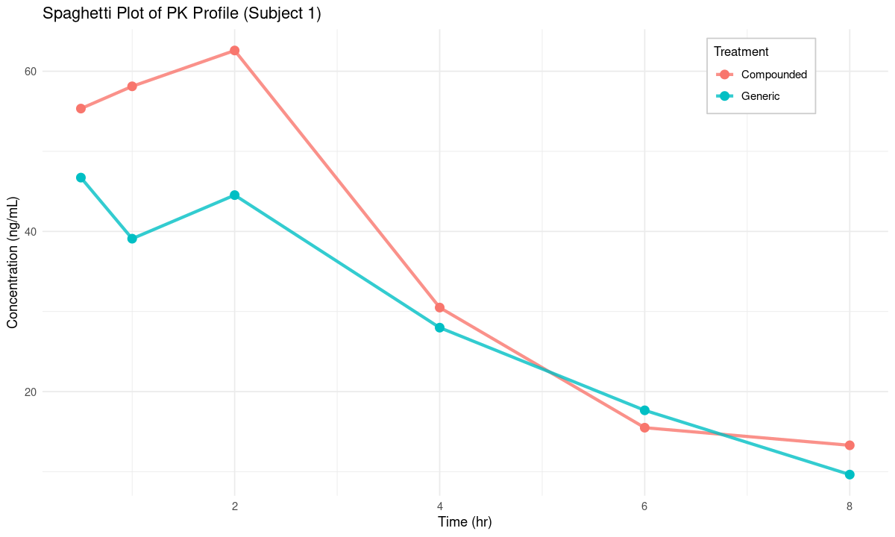
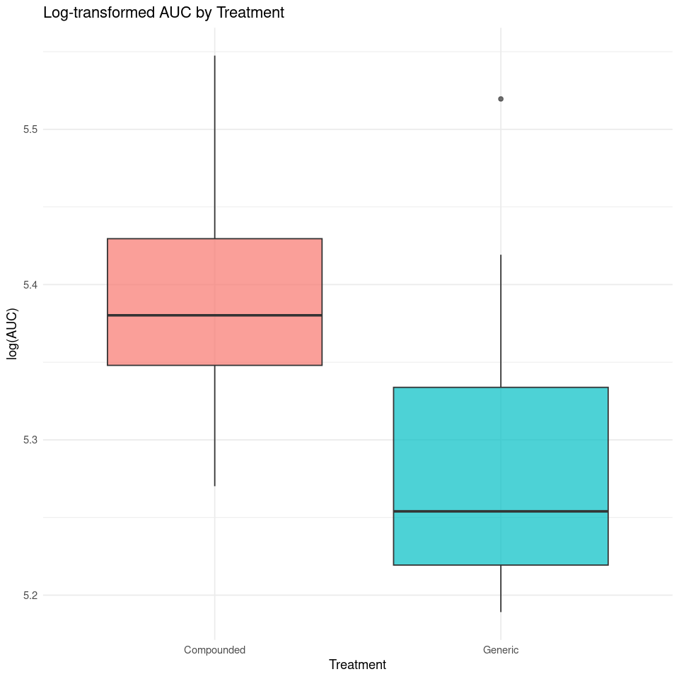
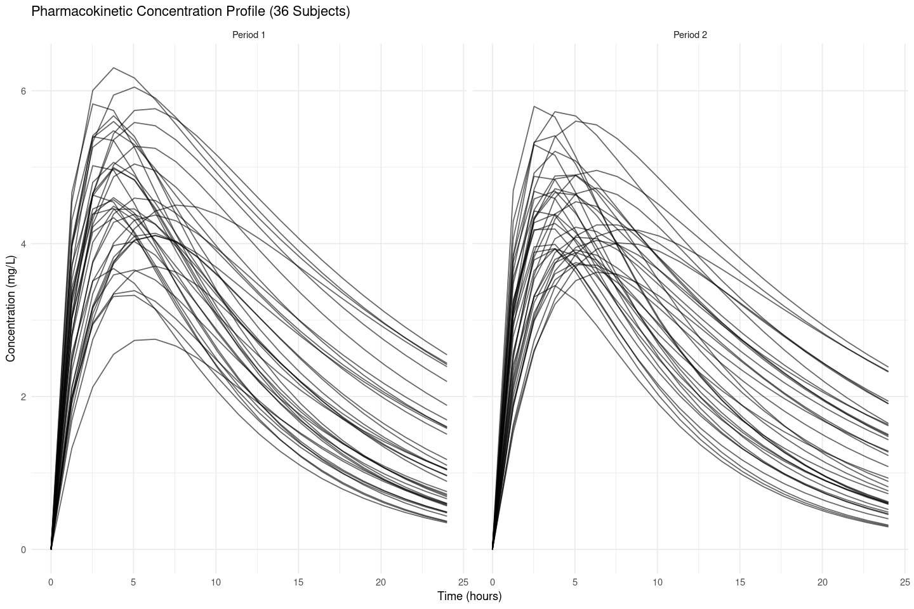

set.seed(1212)
n <- 24
compounded <- rlnorm(n, meanlog = log(100), sdlog = 0.1)
generic <- rlnorm(n, meanlog = log(95), sdlog = 0.1)Data_Table
log_comp <- log(compounded)
log_gen <- log(generic)mean_diff <- mean(log_gen) - mean(log_comp)
se_diff <- sqrt(var(log_gen)/n + var(log_comp)/n)gmr <- exp(mean_diff)90% CI
(z = 1.645 for two-sided 90% CI)
z <- 1.645
ci_lower <- exp(mean_diff - z * se_diff)
ci_upper <- exp(mean_diff + z * se_diff)diff_raw <- mean(generic) - mean(compounded)Result
cat("GMR:", round(gmr, 2), "\n")
cat("90% CI:", round(ci_lower, 2), "~", round(ci_upper, 2), "\n")
cat("Difference (raw scale):", round(diff_raw, 2), "\n")
cat("SE (log scale):", round(se_diff, 4), "\n")GMR: 0.93
90% CI: 0.88 ~ 0.97
Difference (raw scale): -7.56
SE (log scale): 0.0311 Data_Figure
library(dplyr)
library(ggplot2)set.seed(12123)
n_subjects <- 10
time_points <- c(0.5, 1, 2, 4, 6, 8)
subjects <- 1:n_subjects
seq_A <- sample(subjects, 5)
seq_B <- setdiff(subjects, seq_A)
generate_subject_data <- function(id, seq_group) {
if (seq_group == "A") {
data.frame(
subject_id = id,
period = rep(c(1, 2), each = length(time_points)),
treatment = rep(c("Compounded", "Generic"), each = length(time_points)),
time = rep(time_points, times = 2)
)
} else {
data.frame(
subject_id = id,
period = rep(c(1, 2), each = length(time_points)),
treatment = rep(c("Generic", "Compounded"), each = length(time_points)),
time = rep(time_points, times = 2)
)
}
}
pk_df <- do.call(rbind, lapply(seq_A, function(id) generate_subject_data(id, "A")))
pk_df <- rbind(pk_df, do.call(rbind, lapply(seq_B, function(id) generate_subject_data(id, "B"))))
pk_df$conc <- with(pk_df, rlnorm(nrow(pk_df),
meanlog = ifelse(treatment == "Compounded",
log(50 - 5 * time),
log(48 - 5 * time)),
sdlog = 0.2))options(repr.plot.width = 10, repr.plot.height = 6)p <- ggplot(pk_df %>% filter(subject_id == 1),
aes(x = time, y = conc, color = treatment)) +
geom_line(alpha = 0.8, linewidth = 1.2) +
geom_point(size = 3) +
labs(title = "Spaghetti Plot of PK Profile (Subject 1)",
x = "Time (hr)", y = "Concentration (ng/mL)", color = "Treatment") +
theme_minimal() +
theme(
legend.position = c(0.85, 0.9),
legend.background = element_rect(fill = "white", color = "gray80"),
legend.title = element_text(size = 10),
legend.text = element_text(size = 9)
)p
# ggsave("subject1_pk_plot.png", plot = p, width = 10, height = 6, dpi = 300)options(repr.plot.width = 8, repr.plot.height = 8)compute_auc <- function(time, conc) {
sum(diff(time) * (head(conc, -1) + tail(conc, -1)) / 2)
}
auc_df <- pk_df %>%
group_by(subject_id, period, treatment) %>%
summarise(
AUC = compute_auc(time, conc),
.groups = "drop"
) %>%
mutate(log_AUC = log(AUC))p <- ggplot(auc_df, aes(x = treatment, y = log_AUC, fill = treatment)) +
geom_boxplot(alpha = 0.7) +
labs(title = "Log-transformed AUC by Treatment",
x = "Treatment", y = "log(AUC)") +
theme_minimal() +
theme(legend.position = "none")p
# ggsave("auc_plot.png", plot = p, width = 8, height = 8, dpi = 300)Reference
[1] PK Table Example
[2] AUC, Cmax Boxplot
library(ggplot2)
library(dplyr)
library(tidyr)two_compartment_model <- function(t, ka, ke, Vc, Vp, dose) {
Cp <- dose / (Vc + Vp) * (ka / (ka - ke)) * (exp(-ke * t) - exp(-ka * t))
return(Cp)
}# Time
t <- seq(0, 24, length.out = 20)n_subjects <- 36set.seed(1212)
seq <- sample(rep(c("1", "2"), each = 18))
ka1 <- runif(n_subjects, 0.2, 0.8)
ke1 <- runif(n_subjects, 0.05, 0.15)
Vc1 <- runif(n_subjects, 8, 12)
Vp1 <- runif(n_subjects, 3, 7)
dose <- 100df1 <- data.frame()
for (i in 1:n_subjects) {
Cp <- two_compartment_model(t, ka1[i], ke1[i], Vc1[i], Vp1[i], dose)
temp <- data.frame(
Subject = paste0("S", sprintf("%02d", i)),
Time = t,
Concentration = Cp,
Period = "Period 1",
Sequence = seq[i]
)
df1 <- rbind(df1, temp)
}ka2 <- runif(n_subjects, 0.2, 0.8)
ke2 <- runif(n_subjects, 0.05, 0.15)
Vc2 <- runif(n_subjects, 8, 12)
Vp2 <- runif(n_subjects, 3, 7)df2 <- data.frame()
for (i in 1:n_subjects) {
Cp <- two_compartment_model(t, ka2[i], ke2[i], Vc2[i], Vp2[i], dose)
temp <- data.frame(
Subject = paste0("S", sprintf("%02d", i)),
Time = t,
Concentration = Cp,
Period = "Period 2",
Sequence = seq[i]
)
df2 <- rbind(df2, temp)
}df_all <- bind_rows(df1, df2)options(repr.plot.width = 12, repr.plot.height = 8)p <- ggplot(df_all, aes(x = Time, y = Concentration, group = Subject)) +
geom_line(alpha = 0.6) +
facet_wrap(~ Period) +
labs(title = "Pharmacokinetic Concentration Profile (36 Subjects)",
x = "Time (hours)",
y = "Concentration (mg/L)") +
theme_minimal()
p
# ggsave("conc.png", plot = p, width = 12, height = 8, dpi = 300)